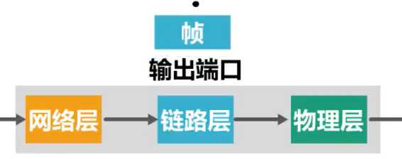

计算机网络第4章（网络层）
4.1、网络层概述
简介
- 网络层的主要任务是实现网络互连，进而实现数据包在各网络之间的传输

这些异构型网络N1~N7如果只是需要各自内部通信，他们只要实现各自的物理层和数据链路层即可
但是如果要将这些异构型网络互连起来，形成一个更大的互联网，就需要实现网络层设备路由器
有时为了简单起见，可以不用画出这些网络，图中N1~N7，而将他们看做是一条链路即可
-
要实现网络层任务，需要解决一下主要问题：
- 网络层向运输层提供怎样的服务（“可靠传输”还是“不可靠传输”）
在数据链路层那课讲过的可靠传输，详情可以看那边的笔记：网络层对以下的分组丢失、分组失序、分组重复的传输错误采取措施，使得接收方能正确接受发送方发送的数据，就是可靠传输，反之，如果什么措施也不采取，则是不可靠传输
- 网络层寻址问题

- 路由选择问题

路由器收到数据后，是依据什么来决定将数据包从自己的哪个接口转发出去？
依据数据包的目的地址和路由器中的路由表

但在实际当中，路由器是怎样知道这些路由记录？
- 由用户或网络管理员进行人工配置，这种方法只适用于规模较小且网络拓扑不改变的小型互联网
- 另一种是实现各种路由选择协议，由路由器执行路由选择协议中所规定的路由选择算法，而自动得出路由表中的路有记录，这种方法更适合规模较大且网络拓扑经常改变的大型互联网


补充 网络层（网际层）除了 IP协议外，还有之前介绍过的地址解析协议ARP，还有网际控制报文协议ICMP，网际组管理协议IGMP
总结

4.2、网络层提供的两种服务
- 在计算机网络领域，网络层应该向运输层提供怎样的服务（“面向连接”还是“无连接”）曾引起了长期的争论。
- 争论焦点的实质就是：在计算机通信中，可靠交付应当由谁来负责？是网络还是端系统？
面向连接的虚电路服务
一种观点：让网络负责可靠交付
- 这种观点认为，应借助于电信网的成功经验，让网络负责可靠交付，计算机网络应模仿电信网络，使用面向连接的通信方式。
- 通信之前先建立虚电路 (Virtual Circuit)，以保证双方通信所需的一切网络资源。
- 如果再使用可靠传输的网络协议，就可使所发送的分组无差错按序到达终点，不丢失、不重复。

发送方 发送给 接收方 的所有分组都沿着同一条虚电路传送
- 虚电路表示这只是一条逻辑上的连接，分组都沿着这条逻辑连接按照存储转发方式传送，而并不是真正建立了一条物理连接。
- 请注意，电路交换的电话通信是先建立了一条真正的连接。
- 因此分组交换的虚连接和电路交换的连接只是类似，但并不完全一样
无连接的数据报服务
另一种观点：网络提供数据报服务
- 互联网的先驱者提出了一种崭新的网络设计思路。
- 网络层向上只提供简单灵活的、无连接的、尽最大努力交付的数据报服务。
- 网络在发送分组时不需要先建立连接。每一个分组（即 IP 数据报）独立发送，与其前后的分组无关（不进行编号）。
- 网络层不提供服务质量的承诺。即所传送的分组可能出错、丢失、重复和失序（不按序到达终点），当然也不保证分组传送的时限。

发送方 发送给 接收方 的分组可能沿着不同路径传送
尽最大努力交付
- 如果主机（即端系统）中的进程之间的通信需要是可靠的，那么就由网络的主机中的运输层负责可靠交付（包括差错处理、流量控制等） 。
- 采用这种设计思路的好处是：网络的造价大大降低，运行方式灵活，能够适应多种应用。
- 互连网能够发展到今日的规模，充分证明了当初采用这种设计思路的正确性。
虚电路服务与数据报服务的对比
| 对比的方面 | 虚电路服务 | 数据报服务 |
|---|---|---|
| 思路 | 可靠通信应当由网络来保证 | 可靠通信应当由用户主机来保证 |
| 连接的建立 | 必须有 | 不需要 |
| 终点地址 | 仅在连接建立阶段使用，每个分组使用短的虚电路号 | 每个分组都有终点的完整地址 |
| 分组的转发 | 属于同一条虚电路的分组均按照同一路由进行转发 | 每个分组独立选择路由进行转发 |
| 当结点出故障时 | 所有通过出故障的结点的虚电路均不能工作 | 出故障的结点可能会丢失分组，一些路由可能会发生变化 |
| 分组的顺序 | 总是按发送顺序到达终点 | 到达终点时不一定按发送顺序 |
| 端到端的差错处理和流量控制 | 可以由网络负责，也可以由用户主机负责 | 由用户主机负责 |
4.3、IPv4
概述

分类编制的IPv4地址
简介

- 每一类地址都由两个固定长度的字段组成，其中一个字段是网络号 net-id，它标志主机（或路由器）所连接到的网络，而另一个字段则是主机号 host-id，它标志该主机（或路由器）。
- 主机号在它前面的网络号所指明的网络范围内必须是唯一的。
- 由此可见，一个 IP 地址在整个互联网范围内是唯一的。
A类地址

B类地址

C类地址

练习

总结
IP 地址的指派范围

一般不使用的特殊的 IP 地址

IP 地址的一些重要特点
(1) IP 地址是一种分等级的地址结构。分两个等级的好处是：
- 第一，IP 地址管理机构在分配 IP 地址时只分配网络号，而剩下的主机号则由得到该网络号的单位自行分配。这样就方便了 IP 地址的管理。
- 第二，路由器仅根据目的主机所连接的网络号来转发分组（而不考虑目的主机号），这样就可以使路由表中的项目数大幅度减少，从而减小了路由表所占的存储空间。
(2) 实际上 IP 地址是标志一个主机（或路由器）和一条链路的接口。
- 当一个主机同时连接到两个网络上时，该主机就必须同时具有两个相应的 IP 地址，其网络号 net-id 必须是不同的。这种主机称为多归属主机 (multihomed host)。
- 由于一个路由器至少应当连接到两个网络（这样它才能将 IP 数据报从一个网络转发到另一个网络），因此一个路由器至少应当有两个不同的 IP 地址。
(3) 用转发器或网桥连接起来的若干个局域网仍为一个网络，因此这些局域网都具有同样的网络号 net-id。
(4) 所有分配到网络号 net-id 的网络，无论是范围很小的局域网，还是可能覆盖很大地理范围的广域网，都是平等的。
划分子网的IPv4地址
为什么要划分子网
在 ARPANET 的早期，IP 地址的设计确实不够合理：
- IP 地址空间的利用率有时很低。
- 给每一个物理网络分配一个网络号会使路由表变得太大因而使网络性能变坏。
- 两级的 IP 地址不够灵活。

如果想要将原来的网络划分成三个独立的网路

所以是否可以从主机号部分借用一部分作为子网号

但是如果未在图中标记子网号部分，那么我们和计算机又如何知道分类地址中主机号有多少比特被用作子网号了呢？
所以就有了划分子网的工具：子网掩码
- 从 1985 年起在 IP 地址中又增加了一个“子网号字段”，使两级的 IP 地址变成为三级的 IP 地址。
- 这种做法叫做划分子网 (subnetting) 。
- 划分子网已成为互联网的正式标准协议。
如何划分子网
基本思路
- 划分子网纯属一个单位内部的事情。单位对外仍然表现为没有划分子网的网络。
- 从主机号借用若干个位作为子网号 subnet-id，而主机号 host-id 也就相应减少了若干个位。

- 凡是从其他网络发送给本单位某个主机的 IP 数据报，仍然是根据 IP 数据报的目的网络号 net-id，先找到连接在本单位网络上的路由器。
- 然后此路由器在收到 IP 数据报后，再按目的网络号 net-id 和子网号 subnet-id 找到目的子网。
- 最后就将 IP 数据报直接交付目的主机。
划分为三个子网后对外仍是一个网络

- 优点
- 减少了 IP 地址的浪费
- 使网络的组织更加灵活
- 更便于维护和管理
- 划分子网纯属一个单位内部的事情，对外部网络透明，对外仍然表现为没有划分子网的一个网络。
子网掩码

(IP 地址) AND (子网掩码) = 网络地址 重要，下面很多相关知识都会用到
举例
例子1

例子2

默认子网掩码

总结

- 子网掩码是一个网络或一个子网的重要属性。
- 路由器在和相邻路由器交换路由信息时，必须把自己所在网络（或子网）的子网掩码告诉相邻路由器。
- 路由器的路由表中的每一个项目，除了要给出目的网络地址外，还必须同时给出该网络的子网掩码。
- 若一个路由器连接在两个子网上，就拥有两个网络地址和两个子网掩码。
无分类编址的IPv4地址
为什么使用无分类编址
无分类域间路由选择 CIDR (Classless Inter-Domain Routing)。

CIDR 最主要的特点
- CIDR使用各种长度的“网络前缀”(network-prefix)来代替分类地址中的网络号和子网号。
- IP 地址从三级编址（使用子网掩码）又回到了两级编址。
如何使用无分类编址

举例

路由聚合（构造超网）

总结

IPv4地址的应用规划
给定一个IPv4地址快，如何将其划分成几个更小的地址块，并将这些地址块分配给互联网中不同网络，进而可以给各网络中的主机和路由器接口分配IPv4地址
定长的子网掩码FLSM（Fixed Length Subnet Mask）

划分子网的IPv4就是定长的子网掩码
举例


通过上面步骤分析，就可以从子网1~8中任选5个分配给左图中的N1~N5
采用定长的子网掩码划分，只能划分出2^n个子网，其中n是从主机号部分借用的用来作为子网号的比特数量，每个子网所分配的IP地址数量相同
但是也因为每个子网所分配的IP地址数量相同，不够灵活，容易造成IP地址的浪费
变长的子网掩码VLSM（Variable Length Subnet Mask）

无分类编址的IPv4就是变长的子网掩码
举例


4.4、IP数据报的发送和转发过程

举例


源主机如何知道目的主机是否与自己在同一个网络中，是直接交付，还是间接交付？

可以通过目的地址IP和源地址的子网掩码进行逻辑与运算得到目的网络地址
- 如果目的网络地址和源网络地址 相同，就是在同一个网络中，属于直接交付
- 如果目的网络地址和源网络地址 不相同，就不在同一个网络中，属于间接交付，传输给主机所在网络的默认网关（路由器——下图会讲解）,由默认网关帮忙转发
主机C如何知道路由器R的存在？

用户为了让本网络中的主机能和其他网络中的主机进行通信，就必须给其指定本网络的一个路由器的接口，由该路由器帮忙进行转发，所指定的路由器，也被称为默认网关
例如。路由器的接口0的IP地址192.168.0.128做为左边网络的默认网关

主机A会将该IP数据报传输给自己的默认网关，也就是图中所示的路由器接口0
路由器收到IP数据报后如何转发？
- 检查IP数据报首部是否出错：
- 若出错，则直接丢弃该IP数据报并通告源主机
- 若没有出错，则进行转发
- 根据IP数据报的目的地址在路由表中查找匹配的条目：
- 若找到匹配的条目，则转发给条目中指示的吓一跳
- 若找不到，则丢弃该数据报并通告源主机
假设IP数据报首部没有出错，路由器取出IP数据报首部各地址字段的值

接下来路由器对该IP数据报进行查表转发

逐条检查路由条目，将目的地址与路由条目中的地址掩码进行逻辑与运算得到目的网络地址，然后与路由条目中的目的网络进行比较，如果相同，则这条路由条目就是匹配的路由条目，按照它的下一条指示，图中所示的也就是接口1转发该IP数据报

路由器是隔离广播域的

4.5、静态路由配置及其可能产生的路由环路问题
概念

多种情况举例
静态路由配置
举例

默认路由
举例
默认路由可以被所有网络匹配，但路由匹配有优先级，默认路由是优先级最低的

特定主机路由
举例
有时候，我们可以给路由器添加针对某个主机的特定主机路由条目
一般用于网络管理人员对网络的管理和测试

多条路由可选，匹配路由最具体的
静态路由配置错误导致路由环路
举例

假设将R2的路由表中第三条目录配置错了下一跳
这导致R2和R3之间产生了路由环路

聚合了不存在的网络而导致路由环路
举例
正常情况


错误情况

解决方法


黑洞路由的下一跳为null0，这是路由器内部的虚拟接口，IP数据报进入它后就被丢弃
网络故障而导致路由环路
举例


解决方法
添加故障的网络为黑洞路由


假设。一段时间后故障网络恢复了
R1又自动地得出了其接口0的直连网络的路由条目
针对该网络的黑洞网络会自动失效

如果又故障
则生效该网络的黑洞网络

总结

4.6、路由选择协议
概述

因特网所采用的路由选择协议的主要特点

因特网采用分层次的路由选择协议
- 自治系统 AS：在单一的技术管理下的一组路由器，而这些路由器使用一种 AS 内部的路由选择协议和共同的度量以确定分组在该 AS 内的路由，同时还使用一种 AS 之间的路由选择协议用以确定分组在 AS之间的路由。

自治系统之间的路由选择简称为域间路由选择，自治系统内部的路由选择简称为域内路由选择

域间路由选择使用外部网关协议EGP这个类别的路由选择协议
域内路由选择使用内部网关协议IGP这个类别的路由选择协议
网关协议的名称可称为路由协议
常见的路由选择协议

路由器的基本结构
路由器是一种具有多个输入端口，和输出端口的专用计算机，其任务是转发分组

路由器结构可划分为两大部分：
1、分组转发部分
由三部分构成
-
交换结构
-
一组输入端口：
信号从某个输入端口进入路由器
物理层将信号转换成比特流，送交数据链路层处理
数据链路层识别从比特流中识别出帧，去掉帧头和帧尾后，送交网络层处理
如果送交网络层的分组是普通待转发的数据分组
则根据分组首部中的目的地址进行查表转发
若找不到匹配的转发条目，则丢弃该分组，否则，按照匹配条目中所指示的端口进行转发
-
一组输出端口
网络层更新数据分组首部中某些字段的值，例如将数据分组的生存时间减1，然后送交数据链路层进行封装
数据链路层将数据分组封装成帧，交给物理层处理
物理层将帧看成比特流将其变换成相应的电信号进行发送
路由器的各端口还会有输入缓冲区和输出缓冲区
输入缓冲区用来暂存新进入路由器但还来不及处理的分组
输出缓冲区用来暂存已经处理完毕但还来不及发送的分组
路由器的端口一般都具有输入和输出功能，这些实例分出了输入端口和输出端口是更好演示路由基本工作过程

2、路由选择部分
-
路由选择部分的核心构件是路由选择处理机，它的任务是根据所使用的路由选择协议。周期性地与其他路由器 进行路由信息的交互，来更新路由表
如果送交给输入端口的网络层的分组是路由器之间交换路由信息的路由报文，则把这种分组送交给路由选择处理机
路由选择处理机根据分组的内容来更新自己的路由表

路由选择处理机还会周期性地给其他路由器发送自己所知道的路由信息


路由信息协议RIP


RIP的基本工作过程
举例

RIP的路由条目的更新规则
举例1

路由器C的表到达各目的网络的下一条都记为问号，可以理解为路由器D并不需要关心路由器C的这些内容
假设路由器C的RIP更新报文发送周期到了，则路由器C将自己路由表中的相关路由信息封装到RIP更新报文中发送给路由器D

路由器C能到达这些网络，说明路由器C的相邻路由器也能到达，只是比路由器C的距离大1，于是根据距离的对比，路由器D更新自己的路由表

举例2

RIP存在“坏消息传播得慢”的问题


解决方法

但是，这些方法也不能完全解决“坏消息传播得慢”的问题，这是距离向量的本质决定
总结

RIP 协议的优缺点
优点：
- 实现简单，开销较小。
缺点：
RIP 限制了网络的规模，它能使用的最大距离为 15（16 表示不可达）。
路由器之间交换的路由信息是路由器中的完整路由表，因而随着网络规模的扩大，开销也就增加。
“坏消息传播得慢”，使更新过程的收敛时间过长。
开放最短路径优先OSPF
开放最短路径优先 OSPF (Open Shortest Path First)
注意：OSPF 只是一个协议的名字，它并不表示其他的路由选择协议不是“最短路径优先”。
概念

问候（Hello）分组

IP数据报首部中协议号字段的取值应为89，来表明IP数据报的数据载荷为OSPF分组
发送链路状态通告LSA

洪泛法有点类似于广播，就是从一个接口进来，从其他剩余所有接口出去
链路状态数据库同步

使用SPF算法计算出各自路由器到达其他路由器的最短路径

OSPF五种分组类型

OSPF的基本工作过程

OSPF在多点接入网络中路由器邻居关系建立
如果不采用其他机制，将会产生大量的多播分组

若DR出现问题，则由BDR顶替DR
为了使OSPF能够用于规模很大的网络，OSPF把一个自治系统再划分为若干个更小的范围，叫做区域（Area）
-
在该自治系统内，所有路由器都使用OSPF协议，OSPF将该自治系统再划分成4个更小的区域
-
每个区域都有一个32比特的区域标识符
-
主干区域的区域标识符必须为0，主干区域用于连通其他区域
-
其他区域的区域标识符不能为0且不相同
-
每个区域一般不应包含路由器超过200个
-
划分区域的好处就是，利用洪泛法交换链路状态信息局限于每一个区域而不是自治系统，这样减少整个网络上的通信量

总结

边界网关协议BGP
BGP（Border Gateway Protocol） 是不同自治系统的路由器之间交换路由信息的协议


总结

直接封装RIP、OSPF和BGP报文的协议

4.7、IPv4数据报的首部格式
各字段的作用
- 一个 IP 数据报由首部和数据两部分组成。
- 首部的前一部分是固定长度，共 20 字节，是所有 IP 数据报必须具有的。
- 在首部的固定部分的后面是一些可选字段，其长度是可变的。

图中的每一行都由32个比特（也就是4个字节）构成，每个小格子称为字段或者域，每个字段或某些字段的组合用来表达IP协议的相关功能

IP数据报的首部长度一定是4字节的整数倍
因为首部中的可选字段的长度从1个字节到40个字节不等，那么，当20字节的固定部分加上1到40个字节长度不等的可变部分，会造成首部长度不是4字节整数倍时，就用取值为全0的填充字段填充相应个字节，以确保IP数据报的首部长度是4字节的整数倍


对IPv4数据报进行分片

现在假定分片2的IP数据报经过某个网络时还需要进行分片


总结

4.8、网际控制报文协议ICMP
概念
架构IP网络时需要特别注意两点：
- 确认网络是否正常工作
- 遇到异常时进行问题诊断
而ICMP就是实现这些问题的协议
ICMP的主要功能包括：
- 确认IP包是否成功送达目标地址
- 通知在发送过程当中IP包被废弃的具体原因
- 改善网络设置等
有了这些功能以后，就可以获得网络是否正常，设置是否有误以及设备有何异常等信息，从而便于进行网络上的问题诊断

ICMP 不是高层协议（看起来好像是高层协议，因为 ICMP 报文是装在 IP 数据报中，作为其中的数据部分），而是 IP 层的协议
ICMP 报文的格式

ICMP差错报告报文
终点不可达

源点抑制

时间超过

参数问题

改变路由（重定向）

不应发送ICMP差错报告报文情况

ICMP应用举例
分组网间探测PING（Packet InterNet Groper）

跟踪路由（traceroute）

tracert命令的实现原理


总结

4.9、虚拟专用网VPN与网络地址转换NAT
虚拟专用网VPN（Virtual Private Network）
- 由于 IP 地址的紧缺，一个机构能够申请到的IP地址数往往远小于本机构所拥有的主机数。
- 考虑到互联网并不很安全，一个机构内也并不需要把所有的主机接入到外部的互联网。
- 假定在一个机构内部的计算机通信也是采用 TCP/IP 协议，那么从原则上讲，对于这些仅在机构内部使用的计算机就可以由本机构自行分配其 IP 地址。


上图是因特网数字分配机构IANA官网查看IPv4地址空间中特殊地址的分配方案
用粉红色标出来的地址就是无需申请的、可自由分配的专用地址，或称私有地址

私有地址只能用于一个机构的内部通信，而不能用于和因特网上的主机通信
私有地址只能用作本地地址而不能用作全球地址
因特网中所有路由器对目的地址是私有地址的IP数据报一律不进行转发
本地地址与全球地址
- 本地地址——仅在机构内部使用的 IP 地址，可以由本机构自行分配，而不需要向互联网的管理机构申请。
- 全球地址——全球唯一的 IP 地址，必须向互联网的管理机构申请。
- 问题：在内部使用的本地地址就有可能和互联网中某个 IP 地址重合，这样就会出现地址的二义性问题。
所以部门A和部门B至少需要一个 路由器具有合法的全球IP地址，这样各自的专用网才能利用公用的因特网进行通信

部门A向部门B发送数据流程

两个专用网内的主机间发送的数据报是通过了公用的因特网，但在效果上就好像是在本机构的专用网上传送一样
数据报在因特网中可能要经过多个网络和路由器，但从逻辑上看，R1和R2之间好像是一条直通的点对点链路
因此也被称为IP隧道技术


网络地址转换NAT（Network Address Translation）

举例

使用私有地址的主机，如何才能与因特网上使用全球IP地址的主机进行通信？
这需要在专用网络连接到因特网的路由器上安装NAT软件

专有NAT软件的路由器叫做NAT路由器
它至少有一个有效的外部全球IP地址
这样，所有使用私有地址的主机在和外界通信时，都要在NAT路由器上将其私有地址转换为全球IP地址
假设，使用私有地址的主机要给因特网上使用全球IP地址的另一台主机发送IP数据报

因特网上的这台主机给源主机发回数据报

当专用网中的这两台使用私有地址的主机都要给因特网使用全球地址的另一台主机发送数据报时，在NAT路由器的NAT转换表中就会产生两条记录，分别记录两个私有地址与全球地址的对应关系

这种基本转换存在一个问题

解决方法

我们现在用的很多家用路由器都是这种NART路由器
内网主机与外网主机的通信，是否能由外网主机首先发起？
否定


总结